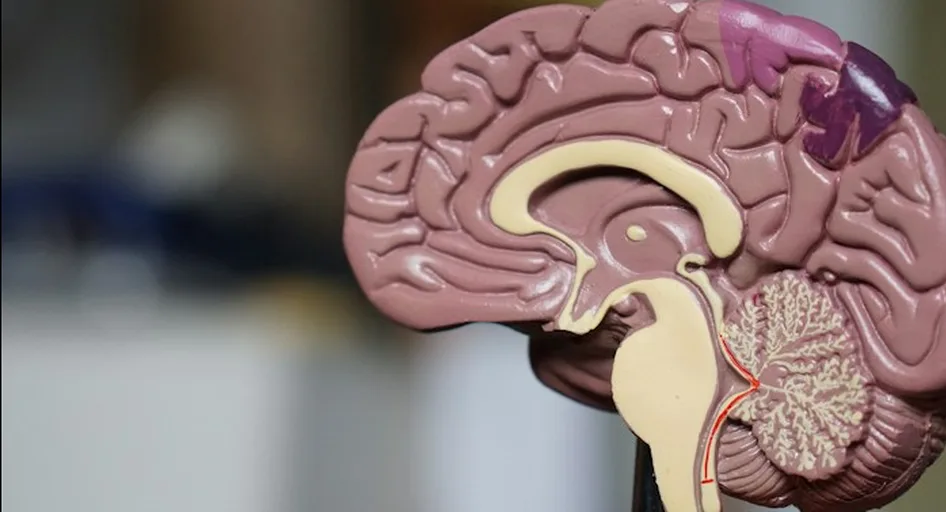

Diagnóstico
Avaliação das necessidades e desafios específicos de cada organização, identificando pontos
de desenvolvimento prioritários.
Desenvolvemos soluções que integram neurociência, educação e desenvolvimento humano
para fortalecer lideranças, promover ambientes de trabalho saudáveis e atender aos
desafios específicos de cada organização.
Para Empresas e Lideranças
Programas voltados ao fortalecimento de lideranças e ao desenvolvimento de competências cognitivas e socioemocionais, promovendo equipes mais preparadas, colaborativas e adaptáveis.
Solicitar InformaçõesSaúde Mental e Psicossocial
Soluções voltadas à identificação e à gestão de fatores de
risco psicossociais relacionados ao trabalho, contribuindo
para ambientes organizacionais mais seguros, saudáveis e
alinhados às exigências da NR-1.
Soluções sob demanda
Desenvolvemos projetos sob medida, considerando as necessidades, os objetivos e os desafios de cada organização,
com metodologias e ações adaptadas à sua realidade.
Nossos programas favorecem decisões mais conscientes, comunicação eficaz, relações colaborativas e maior capacidade de adaptação
às mudanças.
Avaliação das necessidades e desafios específicos de cada organização, identificando pontos
de desenvolvimento prioritários.
Programas customizados que integram neurociência aplicada com metodologias ativas e práticas.
Experiências práticas que favorecem a transferência do conhecimento para o cotidiano organizacional.
Monitoramento contínuo dos resultados e ajuste das estratégias para garantir mudanças comportamentais sustentáveis.
Neurociência Aplicada
Transformamos descobertas da neurociência em estratégias práticas para desenvolver funções cognitivas e competências socioemocionais que impactam diretamente o desempenho profissional.
Mais do que oferecer treinamentos, promovemos experiências práticas de aprendizagem que geram mudanças comportamentais consistentes e sustentáveis.
